Mosaics
SYDE 671 · Assignment 3 · James Xie
A.4 / SEVEN VIEWS.
ONE MOSAIC.
Follow the gold facade from its left edge to the building’s right-hand turn. Seven overlapping views become one wider image.
01 / A wider view of the building.
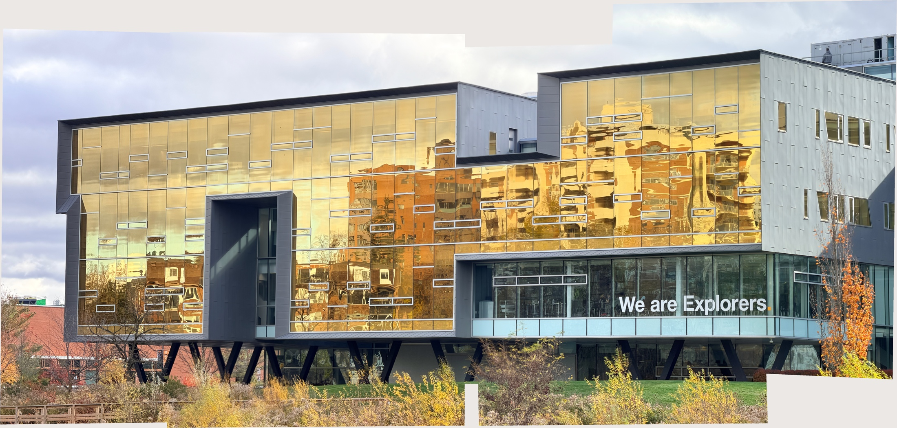

IMG_8446 is the reference. Seven views cover the left facade through the right-hand turn, with IMG_8448 bridging IMG_8447 and IMG_8450.
Clarification: Part A requires one mosaic with at least two images; this result uses seven. Part B requires one mosaic with at least three, shown in B.4.
02 / The seven source images.

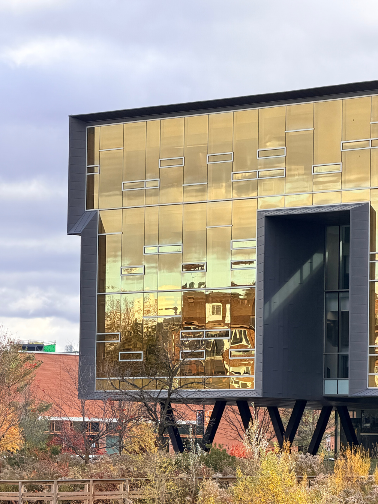

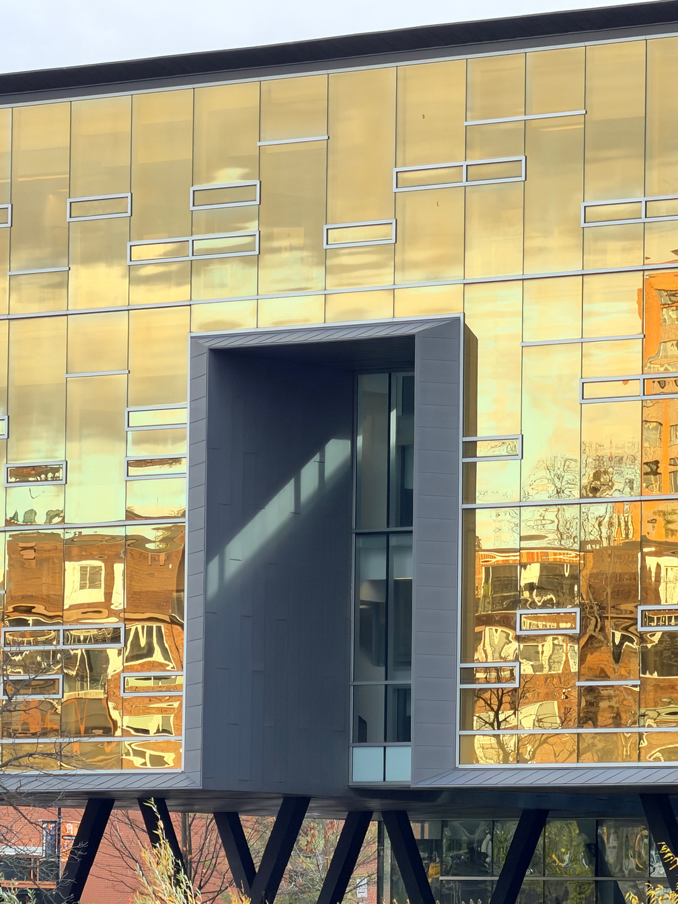

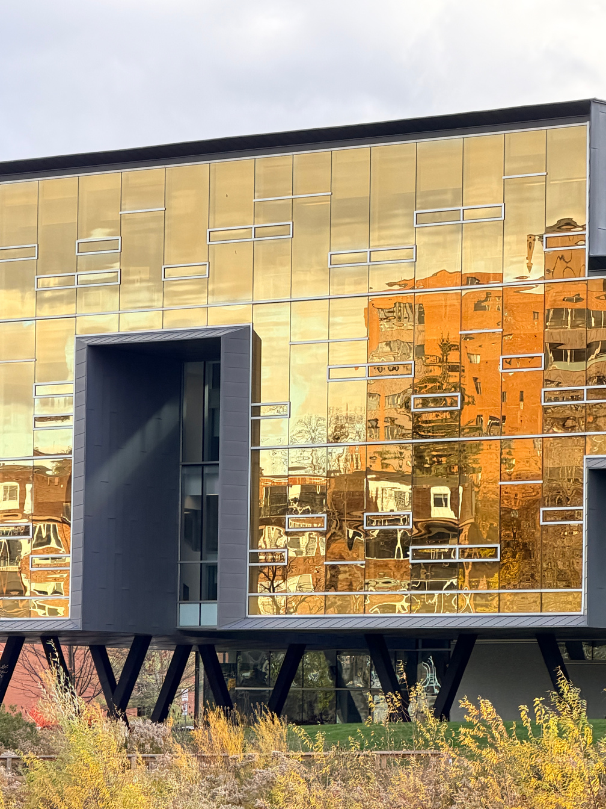

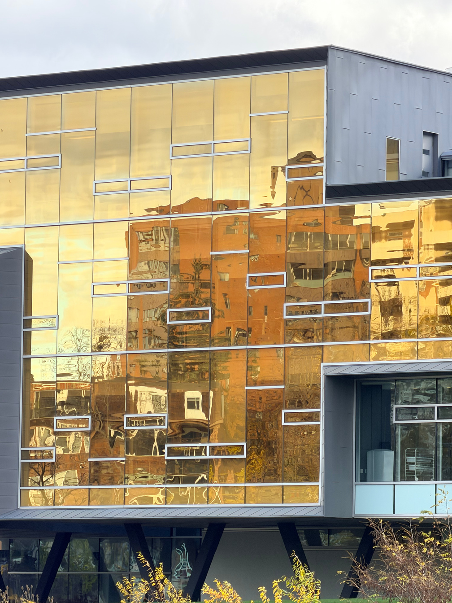

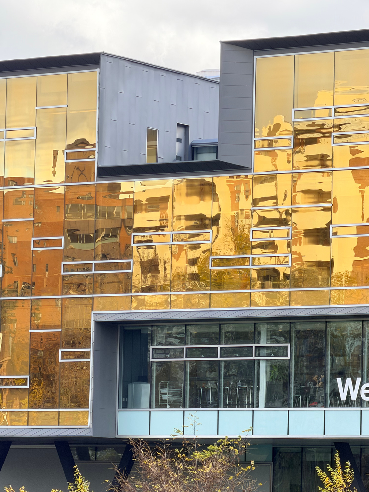

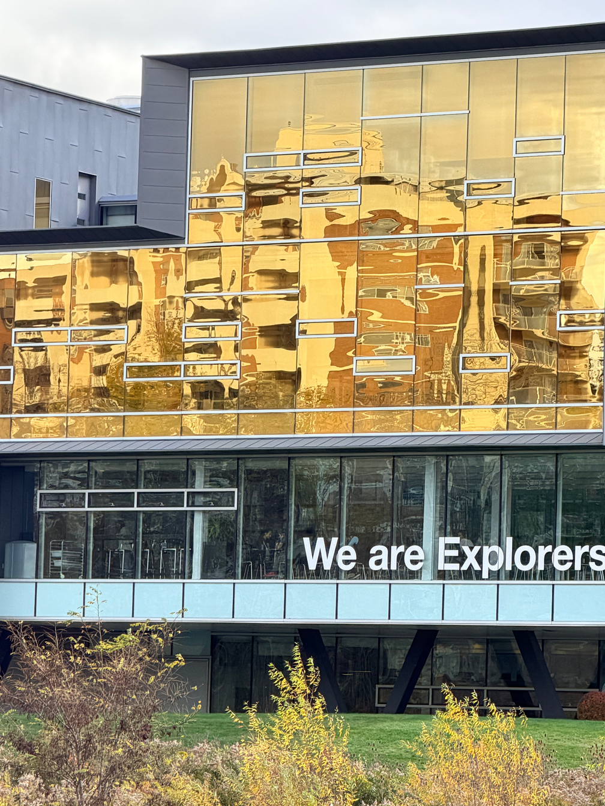

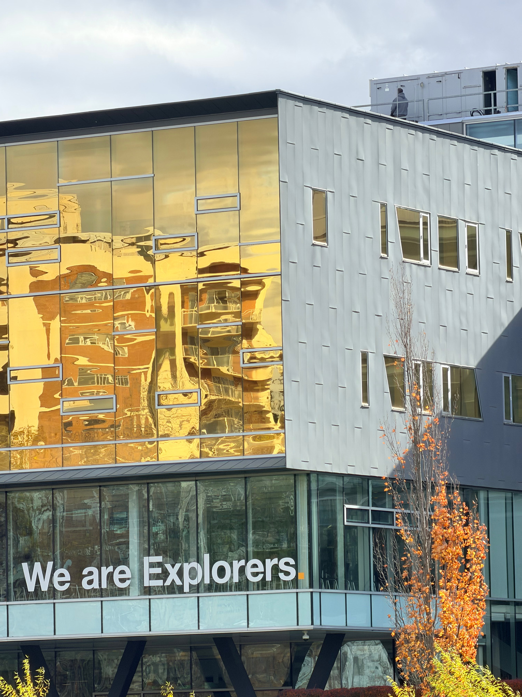
Three originals are 4284 × 5712; four are 3024 × 4032. The A.3 bilinear sampler reads originals directly into a 60% reference grid, without pre-resizing.
03 / One coordinate frame, seven contributions.
A.2 H values map each image to the next. Chain them forward on the left of IMG_8446 and inversely on the right, then apply pixel-center scaling to every image.
The four transformed corner centers of each source define its bounds; their union gives origin (-2063, -420) and the common 6,623 × 3,165 grid. The full-scale union is about 58 million pixels; this output has 20,961,795. RGB and weights are warped in blocks and blended sequentially.
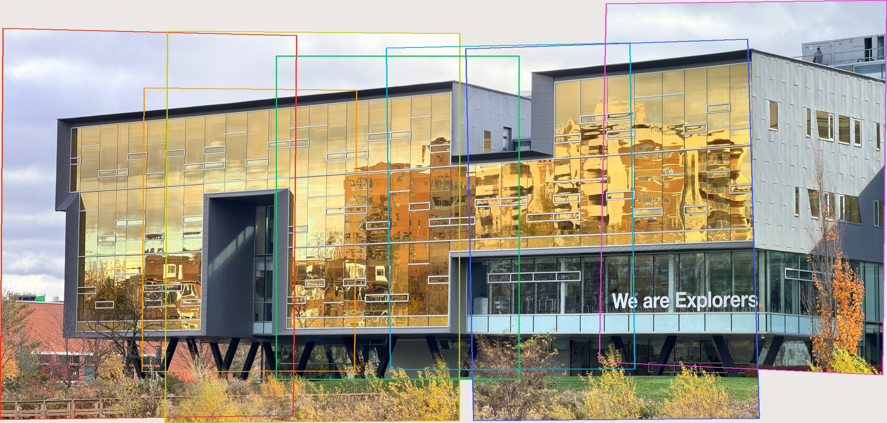
Feather weights use distance to the source boundary, normalized to one at the center. Borders keep positive weight. Weights share the RGB warp and are zero outside valid support.
Only valid samples contribute. Single-source pixels keep their values; absent pixels stay transparent. Blending uses encoded RGB, without exposure compensation or radiance calibration.
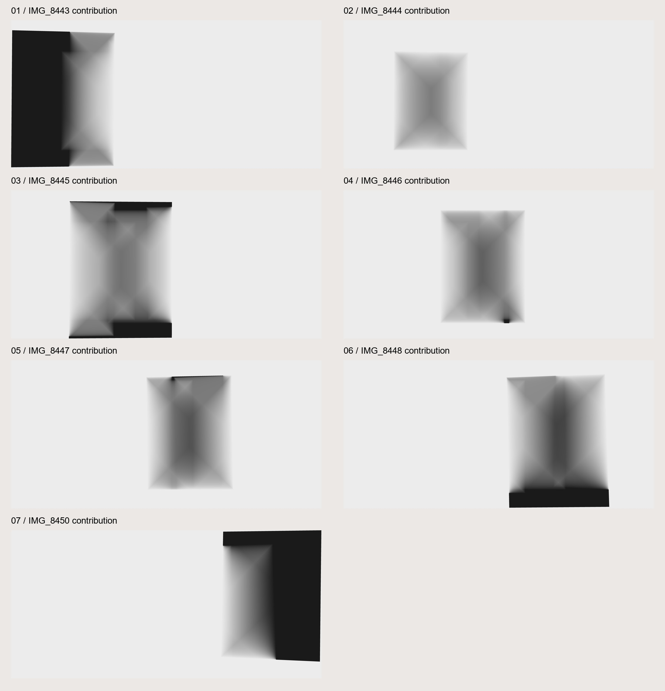
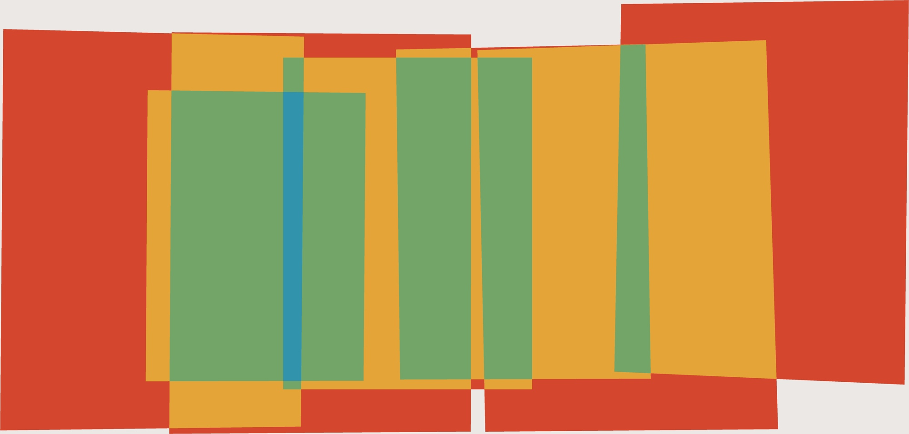
04 / Overwrite versus feathering.
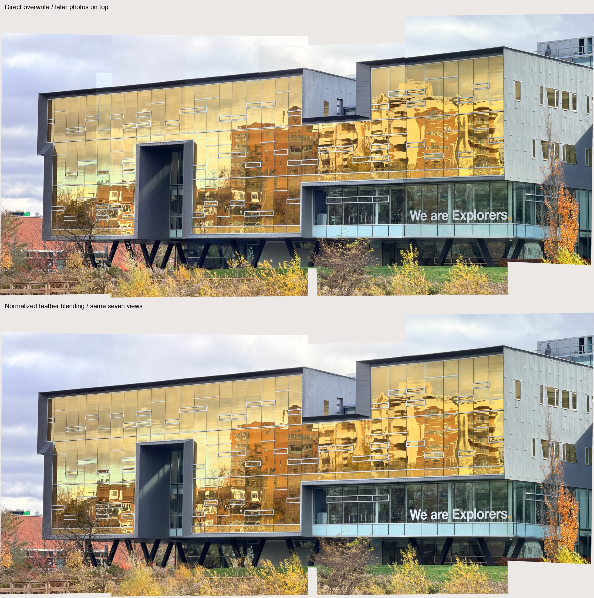
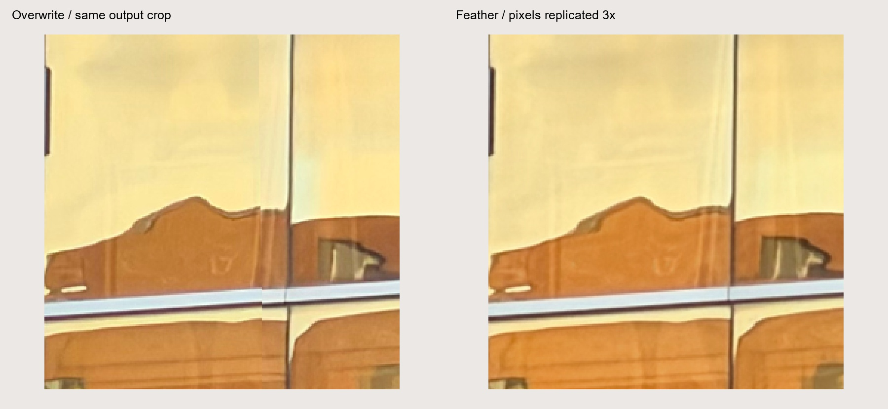
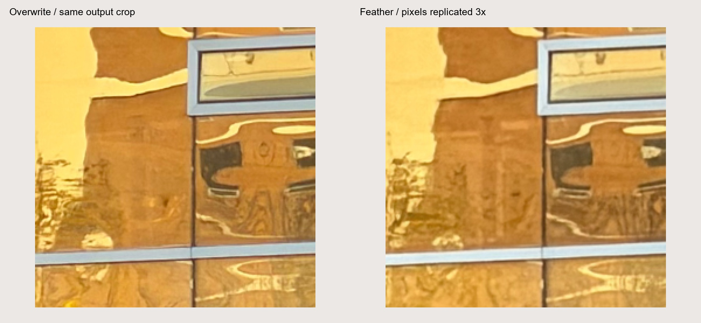
Feathering reduces seams but leaves doubled or soft edges where frames, reflections and other planes disagree.
05 / Check the geometry without hiding its limits.
The table measures four excluded A.2 check pairs per neighbor on the 60% canvas. Annotations were visually revised, so this is not blind validation. Local residuals do not measure cumulative drift.
| Adjacent pair | Check RMSE (canvas px) | Maximum (canvas px) |
|---|---|---|
| 8443 → 8444 | 0.647 | 1.204 |
| 8444 → 8445 | 1.067 | 1.413 |
| 8445 → 8446 | 0.412 | 0.680 |
| 8446 → 8447 | 0.964 | 1.443 |
| 8447 → 8448 | 0.414 | 0.681 |
| 8448 → 8450 | 1.580 | 1.907 |
There is no independent end-view closure check. Multiple depths, reflections, vegetation and camera translation can still disagree. Full-size output and crops show the remaining mismatch.
All seven original-to-canvas matrices
IMG_8443.jpg → shared canvas
0.521707154 -0.00384679251 22.8750077 0.0146188571 0.50796635 209.333478 6.79409484e-06 1.43274517e-07 0.99016595
IMG_8444.jpg → shared canvas
0.534911002 -0.00301299593 1073.21552 0.00937739757 0.526777758 655.733765 3.89145735e-06 3.55214946e-07 0.998113515
IMG_8445.jpg → shared canvas
0.518277628 -0.00472954619 1250.92227 0.00440425644 0.508861584 234.855075 2.57785567e-06 -1.23146486e-06 1
IMG_8446.jpg → shared canvas
0.6 0 2062.8 0 0.6 419.8 0 0 1
IMG_8447.jpg → shared canvas
0.576973254 0.00411169615 2867.28466 -0.0141094307 0.590410021 358.016382 -4.41734901e-06 -1.10323529e-06 0.993917236
IMG_8448.jpg → shared canvas
0.460739407 0.00206779407 3436.9113 -0.0181641305 0.47452013 361.089794 -4.43820086e-06 -2.24307006e-06 0.988310559
IMG_8450.jpg → shared canvas
0.578005393 -0.0227458949 4376.92363 -0.00918151855 0.636735235 28.2125699 -1.39421727e-05 -2.39006191e-06 0.967104595
Reproduce & inspect.
python run_panorama.py python build_report.py python -m unittest test_panorama_geometry -v
Seven-image experiment · Transform composition · Handwritten feathering and blending · Handwritten bilinear sampler · Matrices, input hashes, support counts and 45 scalar probes · Adjacent check geometry
Overwrite baseline RGBA · Union validity · 8443 mask · 8444 mask · 8445 mask · 8446 mask · 8447 mask · 8448 mask · 8450 mask


Checks verify transform order, pixel-center scaling, masks, single-source pixels and 45 blend samples. Input hashes are unchanged.